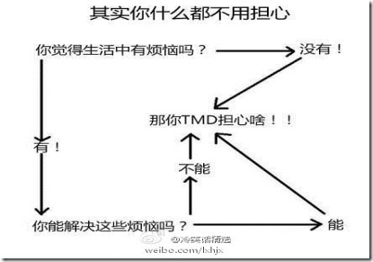

症状
毎日忙しく過ごしているのに、何も成し遂げられずにいる。時間は一日また一日と繰り返され、物価は日々高騰し、自分の給料だけでなんとか生活している。夜が訪れ、寝る前になると、いつも生活に何かが足りないように感じ、不安と心配に悩まされている。
患者の状況
昨年7月に、ある無名の都市にある無名の大学を卒業した。専攻はコンピュータの教員養成コースだったが、伝説的にすごいと言われるプログラマーという業界を選び、中学校や高校で偉大な「人間の魂のエンジニア」（教師）になるという職業を捨てた。しかも、最も敷居が低いと言われるPHP言語を選び、人間の楽園と言われる杭州へ単身流れてきた。本当のプログラマーとしての人生は卒業が近づいた頃（5月）に始まった。卒業の送別の酒を飲み交わし、送別の食事を終えると、大学4年間の同級生との感情の一つ一つは記憶に残るだけとなり、杭州で細々と暮らしている。
患者の一日の活動
会社の勤務時間：8:30〜17:30、昼休み2.5時間、自宅から会社まで約2.5km。
6:30 目が覚め、ベッドで30分ごろごろする；
7:00 スマホを手に取り、UCでcnbeteのニュースを見る；
7:30 起き始める；
7:45頃 自転車で出社する；
8:05 会社に到着、駐輪、タイムカードを押す；
8:10 オフィスに着き、パソコンを起動し、お湯を注ぎ、QQ、博客園、CSDNなどをチェックする；
8:30 会社の始業時間；
9:00 Eclipse、DWなどのツールを起動して仕事を始める；
11:30 食事に行く；
12:00 オフィスに戻り、またQQ、博客園、微博、音楽など；
13:00 休憩を始める；
14:00 目が覚め、顔を洗い、仕事を続ける；
17:30 会社の終業時間だが、習慣的に残って残業し、今日直面した問題に関わる知識ポイントを調べ、未解決の問題を解決する；
18:00 主任が退社の時間だと注意を促す；
19:00 退社の準備を始める；
19:20 帰宅；
19:30 自分で料理を始め、彼女が帰ってくるのを待って一緒に食事をし、食べ終わったら鍋を洗い皿を洗う；
20:30 Youkuでテレビドラマを1話見る；
21:30 シャワーを浴びるなど；
22:00 就寝の準備を始める；
22:20 眠りにつく。
「医者」の診断
この患者は典型的な「蟻族」の類に属する（無名校出身、典型的な貧しい第二世代、ある辺鄙な農村出身）
この患者は、キャンパス内の考え方と社会全体の考え方の衝突の中にいる（特に卒業したばかりの学生は、意気揚々とキャンパスを飛び出したものの、社会と学校は別物だと気づく）
この患者は典型的な「80後」（1980年代生まれ）の不安症候群である（住宅価格も物価も上がっているのに、給料だけはカタツムリのように上がらない。彼女は結婚や家の購入を考えているかもしれない。両親は、やっとの思いで村で唯一の大学生に育て上げたのだから、息子には出世してほしいと思っている…）
この患者は人生の迷いの段階にいる（卒業したばかりの学生は、自分をどう位置づけ、どう人生計画を立てればいいのか分からず、そのために生活が忙しく流されているように感じるが、内心はまた意気軒昂で、不安と困惑にとらわれている）
「医者」のアドバイス
生活態度：
実際に事を行う
文句を言わず、説明もしない。急がば回れ
小賢しさやその場しのぎで問題を解決してはならない。あるものは勇気を持って徹底的に解決しなければならない。人ではなく事に対して向き合う
事柄に即して、賢明かつ誠実に、謙虚に問題を議論し、革新的な解決策を提案する。あらゆる困難を排して、勇敢に前進する
勇気は往々にして困難を克服する唯一の方法である。
生活のプレッシャー：
物価上昇など各方面からのプレッシャーに対する考え方として、有名な一枚の図を紹介する：

仕事と学習：
開発のリズムを掴む：時間をうまく管理し、良い習慣を身につけ、残業をしないこと。残業は良い習慣ではなく、個人的には効率が高くないと感じる。
今日のことは今日中に終わらせる：探究心のある精神と態度で学習し仕事に取り組むこと。
捨てることを知る：プログラマーは古いやり方や技術は、捨てるべき時に捨て、因習にとらわれてはいけない！
変化を追う：新しい技術は絶えず登場する。新しい技術の学習は、仕事の問題を解決することを動機とすべきであり、むやみに流行に追随してはいけない。
チーム関係を良好にする：良いチームは素晴らしい雰囲気をもたらすだけでなく、さらに重要なのは、自己向上と技術交流のための重要な要素でもある。
ユーザーの立場で物事を考える：作った製品はどれもパソコンに詳しくない人のためのものであり、プログラマーであるあなたたちのためのものではない。だからユーザーをバカだと罵らず、自分自身を反省すべきだ。
適時に個人のまとめと開発ドキュメントの整理を行う。
偉大さは耐え抜いてこそ生まれる！大事なのは継続である。
あなたの生活に対する処方箋
あなたが個人的に時間を無駄にしているところ：
ベッドからなかなか出ないことと、ベッドでスマホをいじること。
QQ、微博などのSNSサイトを、朝、昼、晩、寝る前と、一日に4回も訪れている。1回にまとめられる。
仕事をする時に計画がない。
あなたの一日の時間に対するアドバイス：
ベッドからなかなか出ず、ベッドでスマホをいじらないこと。
QQ、微博などのSNSサイトを何度もぶらぶら見ることを禁止する。
仕事を始める前に、一日の仕事計画を書き出す。
物事は素早く、勤勉に行うこと。なぜなら、人は一度怠け者になると、再び勤勉になるのは難しいからだ。
使用方法：
毎日続けること。継続は美徳であり、偉大さは耐え抜いてこそ生まれる！
注意事項：
傲慢と焦りを戒め、長期にわたって続けて初めて効果が出る。
この処方箋は人によって異なる。むやみに当てはめてはならず、使用前にまず「医者」に相談すること。
筋金入りの憤青は使わなくてよい。
出典：PHP淮北@PHP10086ブログサイト
リンク：http://www.cnblogs.com/phphuaibei/archive/2011/11/03/2234398.html